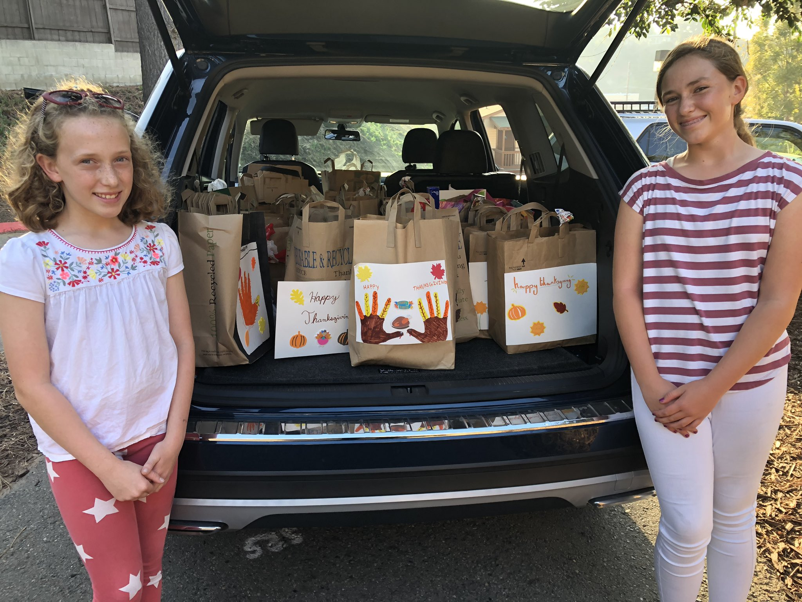
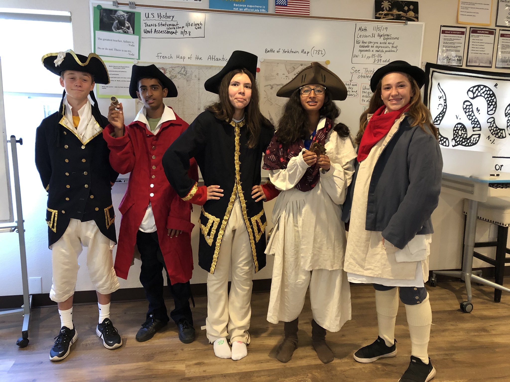

Hi! My name is Willa and I am so proud of this website. I love to learn and my hobbies include soccer, acting, singing, volunteering, swimming and reading.
My goal for this year was to increase my vocabulary and qualitiy of analysis, and has been very similar to my stretch. The steps I have taken to achieve this goal have been subscribing to Dictionary.com's Word of the Day and I have been incorporating this new vocab into the class debates and my writing. Addtionally, I have written down key words from all of my reading. Now, when I am analyzing in my annotations or note-taking, I try to take every opportunity to use these words. A good example of my increase in analysis would be my Book 5 and 6 Q&As.
My stretch for this year was to increase my vocabulary so I can sound more eloquent and be able to get my point across simply. The way I planned on achieving this was to keep track of vocabulary words I didn't know, create flashcards and occasionally test myself. So far, I have been keeping good track ina few different notebooks and I have been reading from different genres, so my growth has been large. This is still relevant to be my stretch.
One of my strengths is using my ability to learn visually and channeling that in my presentations and projects. An example is when I made a presentation on an organization called FFCC and I was able to set up a Thanksgiving Food Box Project. We collected over 20 bags of complete meals for a group of homeless women and their children.
This is an image of me during November with the Thanksgiving Food Box Project Drive.
This is me and my sister next to the collected and bagged goods.
This is an image of me and my classmates dressing up with Colonial outfits in Social Studies.